Lugares
a los que volverás.
Guarda un lugar con un toque. Stops recuerda en silencio a dónde fuiste, convierte tus días fuera en viajes y tiene listo el pronóstico para el próximo. Tú sigue con la aventura.
Sin cuenta. Sin servidores nuestros. Todo se queda en tu propio iCloud.
Llega el 1 de diciembre al iPhone, iPad, Mac y Apple Watch
Las apps de mapas te llevan. Stops guarda los lugares.
Las apps de mapas están hechas para navegar, así que guardar un lugar propio toma más toques de los que debería. Stops es para los lugares que encuentras en el camino: un sitio tranquilo para acampar, una vista que merece un café, una caminata que quieres repetir, la tienda que tenía de todo. Lo ves, lo guardas, y te espera la próxima vez que pases cerca.
Guarda los lugares a los que quieres volver.
El lago tranquilo, la vista que te hizo detenerte, la tienda que tenía de todo. Un toque y es una parada en tu mapa, con una nota para tu yo del futuro, para que la próxima vez que pases sepas que está ahí.
- Ve a qué distancia está cada parada y obtén indicaciones con un toque, en tu app de navegación favorita
- Guarda dónde estás desde un widget, Siri o tu Apple Watch, sin abrir la app
- Encuentra cualquier parada desde Spotlight, Siri o Inteligencia Visual

Listas para planear y para compartir.
Agrupa paradas en listas para un viaje por carretera, un fin de semana fuera o una ruta gastronómica. Comparte una lista con quien vaya en el auto y todos pueden agregar lugares.
- Las listas compartidas se mantienen sincronizadas con iCloud y puedes ver lo que agregaron los demás
Trae lugares de blogs y de otras apps.
La panadería de un blog, el bar que te mandó un amigo, una lista completa de Google Maps o una guía de Mapas de Apple. Compártela con Stops y aparece en tu mapa. ¿Copiaste un enlace? Stops lo detecta cuando vuelves y te ofrece guardarlo.
- Funciona desde la hoja para compartir de cualquier app
- Entiende enlaces de Mapas de Apple y Google Maps, direcciones y coordenadas
- Nombre, dirección y categoría, ya completados
- Importa guías de Mapas de Apple, Google Takeout y archivos GPX, gratis para todos (descubre cómo)

Stops recuerda, para que tú no tengas que hacerlo.
Activa la Cronología una vez y es lo último que tienes que hacer. Los días, los viajes y los países se completan solos a partir de a dónde vas en realidad, sin anotar nada. Después, desde el sillón, los lugares que te gustaron se vuelven paradas con un toque.
Dónde estuviste, día a día.
Stops anota en silencio los lugares donde pasas tiempo, para que puedas repasar cualquier día de un viaje. Dónde estuviste es solo tuyo: vive en tus dispositivos y en tu propio iCloud, y nada de eso se recopila ni se envía a ningún lado, nunca.
- Ve cada día como un mapa y una lista de visitas
- El clima en el momento de cada visita
- Guarda como parada cualquier lugar donde estuviste, directo desde el día
- Sin cuenta, sin servidores, sin analíticas. Nadie más que tú puede ver tu Cronología
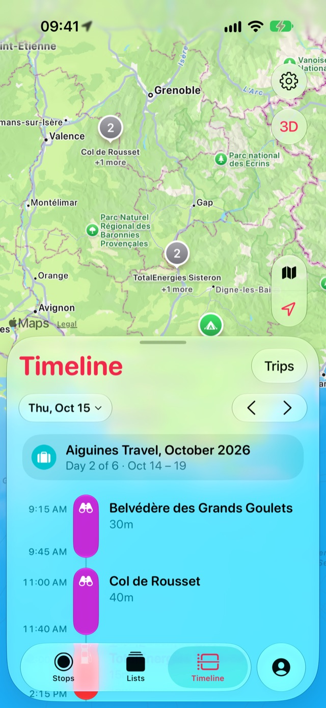
Años de viajes, encontrados en tus fotos. Pro
Stops puede completar tu Cronología, tus viajes y tus países con las fotos que tomaste antes de tener la app, años atrás. Y en cada parada, las fotos que tomaste ahí te esperan en su tarjeta.
- Tus fotos se quedan en tu fototeca. Nada se copia, se guarda ni se sube
- Ves lo que se encontró antes de que se agregue nada
- Abre una parada para ver las fotos que tomaste ahí, de cada visita

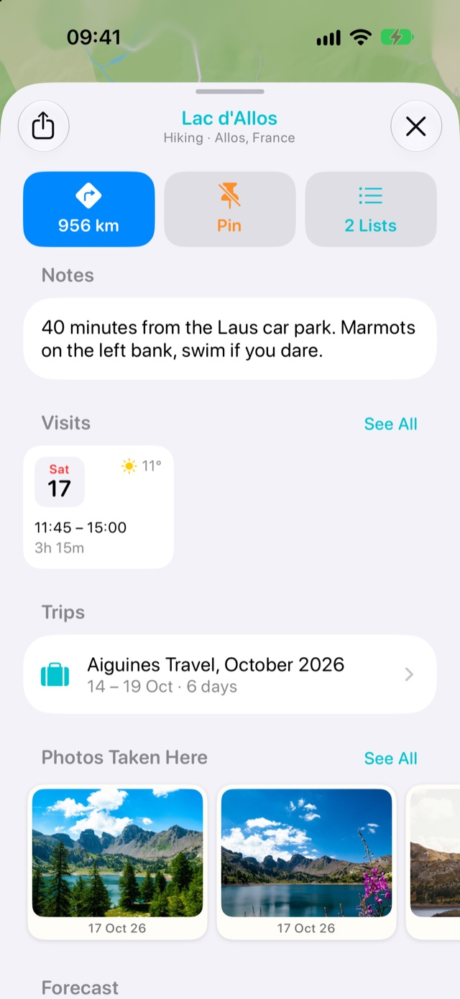
Tus viajes, encontrados para ti. Pro
Pasa algunas noches fuera de casa y Stops convierte esos días en un viaje, con su mapa, pueblos y ciudades, cifras y fotos.
- Cuando vuelves a casa, Stops elige los lugares del viaje que vale la pena guardar, y cada uno se vuelve una parada con un toque
- Comparte un viaje como imagen de mapa
- Cada país tiene su propio diario con tus pueblos y ciudades, viajes, lugares más visitados y paradas

Y un parche por cada país.
Cruza a un país nuevo y su parche bordado es tuyo. Un pequeño premio por salir a explorar.
El próximo viaje empieza en los lugares que ya te encantan.
Cada parada que guardaste es una opción para el fin de semana. Stops pone el pronóstico en cada una, las ordena según el clima y encuentra las que quedan en el camino.
El pronóstico en cada parada. Pro
Comparar paseos de un día significaba abrir una pestaña del navegador por lugar, o saltar de la app del clima al mapa para encontrar el lugar y volver otra vez al clima. Abre una parada y el clima está ahí mismo: hora por hora, la semana siguiente, y el amanecer y el atardecer, para que sepas cuánta luz de día queda, a qué hora poner la alarma para ver el amanecer o cuándo llegar para esa foto del atardecer.
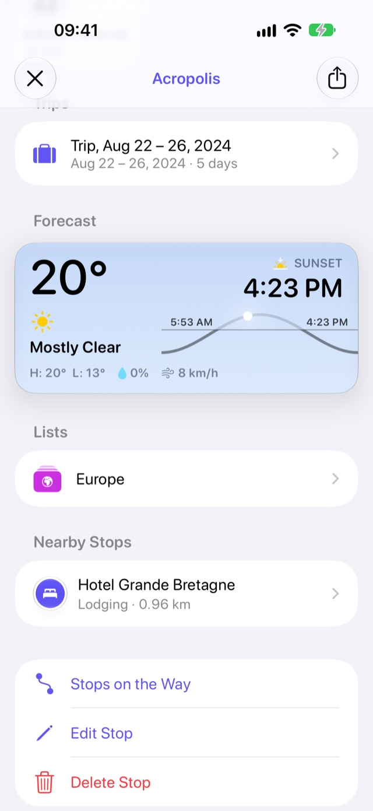
Adónde ir este fin de semana. Pro
Elige un día y Stops ordena tus paradas guardadas que tienes a tu alcance, con el mejor clima primero, y la máxima, la mínima y la probabilidad de lluvia del día. ¿El lago o el mirador? Lo decides de un vistazo.
- Limítalo a los tipos de lugares que se te antojen
- Pueblos y ciudades cercanos donde aún no has estado, sugeridos junto a ellas
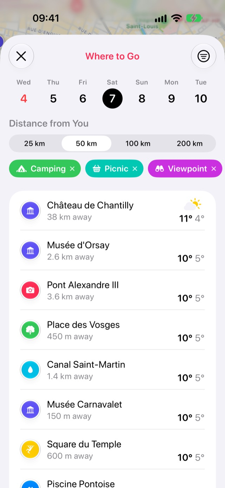
Tus paradas, en el camino.
¿Vas a algún lado? Stops te muestra los lugares que guardaste a lo largo del trayecto, en el orden en que llegarás a ellos, y a qué distancia de la carretera está cada uno. Marca los que quieras y obtén indicaciones que pasen por todos.
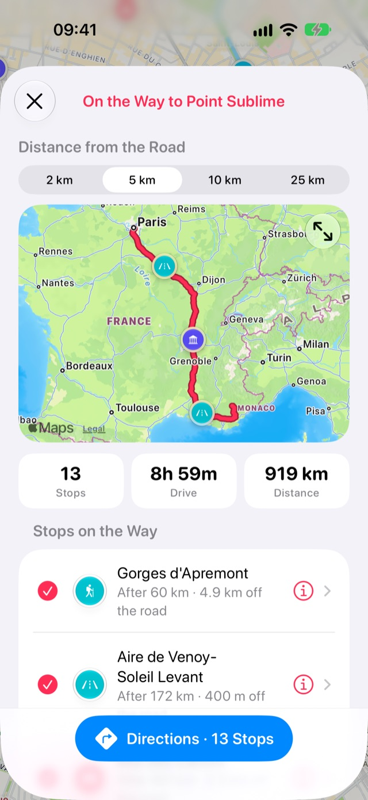
Itinerarios, con las caminatas resueltas. Pro
Pon las paradas de una lista en el orden en que las vas a visitar y aparece la caminata entre cada una, con toda la ruta en el mapa. Una lista más larga se divide en días.
- Cada parada se marca sola cuando llegas
- Un itinerario que creaste sigue funcionando, con Pro o sin Pro
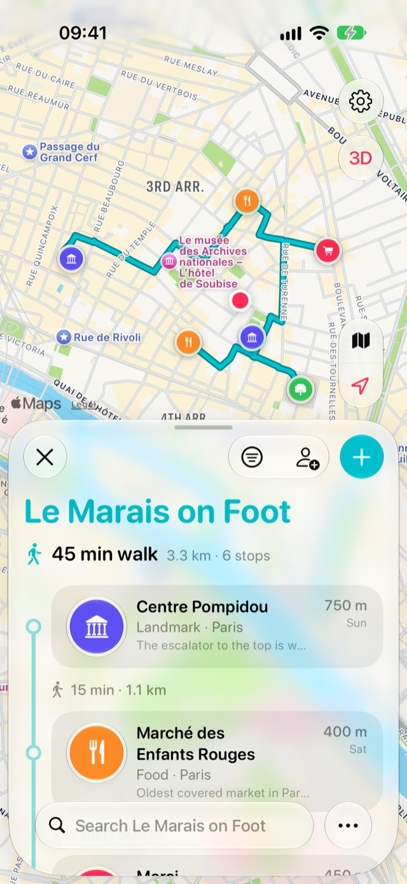
Justo ahí cuando la necesitas.
Una sola app, sincronizada con tu iCloud, en cada pantalla que tienes.
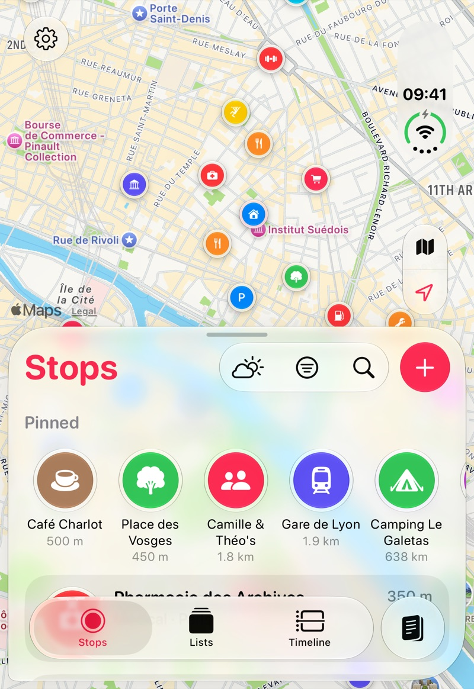


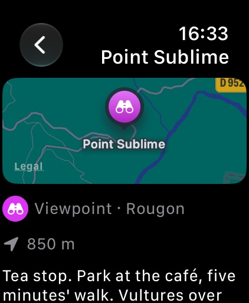
Widgets
Tus paradas más cercanas en la pantalla de inicio y en la pantalla bloqueada, a un toque de las indicaciones, y un botón para guardar dónde estás.
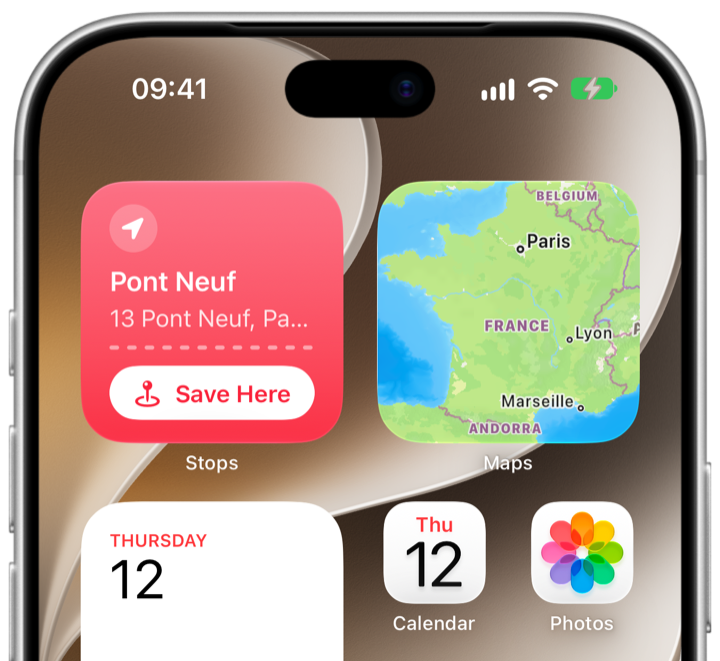
Siri y Atajos
“Guarda una parada en Stops” o “¿Cuál es mi parada más cercana en Stops?”, sin usar las manos, con las dos en el volante.
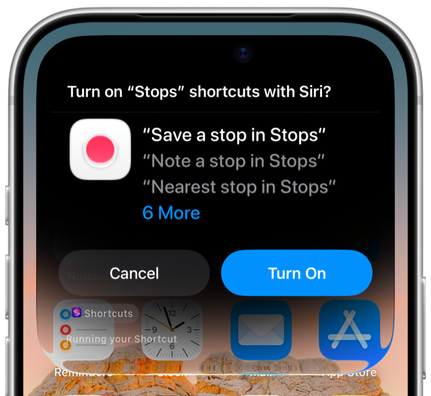
Recordatorios al llegar
Un aviso discreto cuando estás cerca de una parada que guardaste, con la nota que te dejaste. Solo si lo activas.
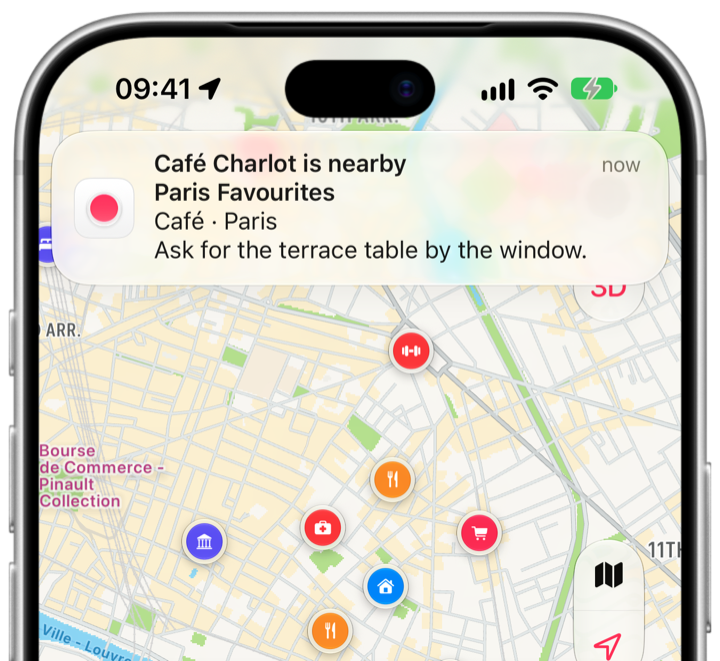
Tus datos, a tu manera
Exporta todo o cualquier lista como GPX, KML o CSV cuando quieras. Siempre gratis.
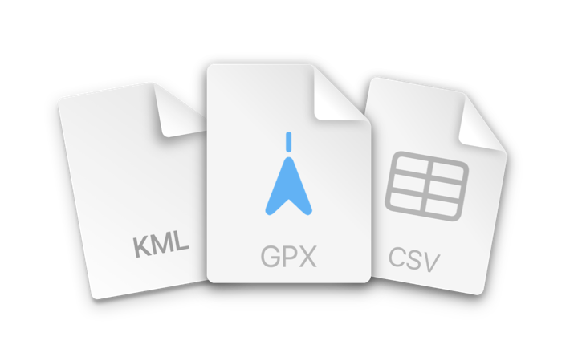
Spotlight e Inteligencia Visual
Encuentra cualquier parada o lista desde Spotlight, o apunta la cámara a un lugar para ver su parada.
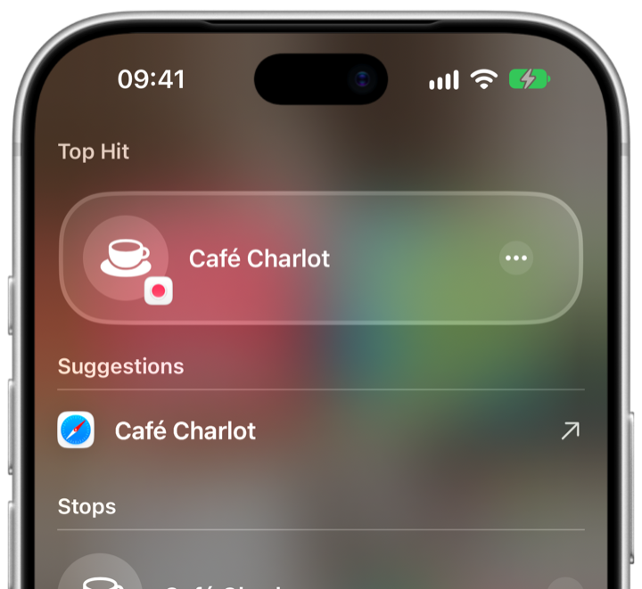
En tu idioma
Inglés, alemán, francés, español, italiano, portugués, japonés, coreano y chino.
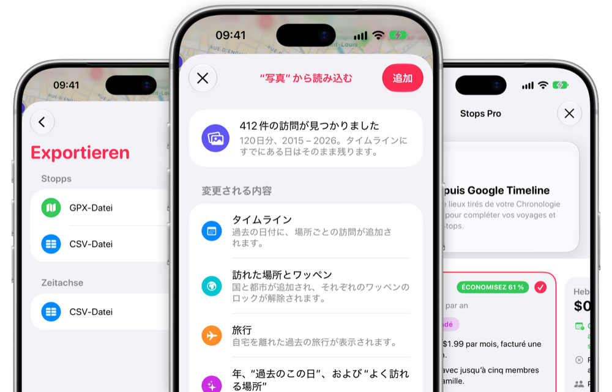
Hecha para el iPhone Duo desde el primer día.
Stops está lista para el nuevo iPhone, cerrado o abierto.
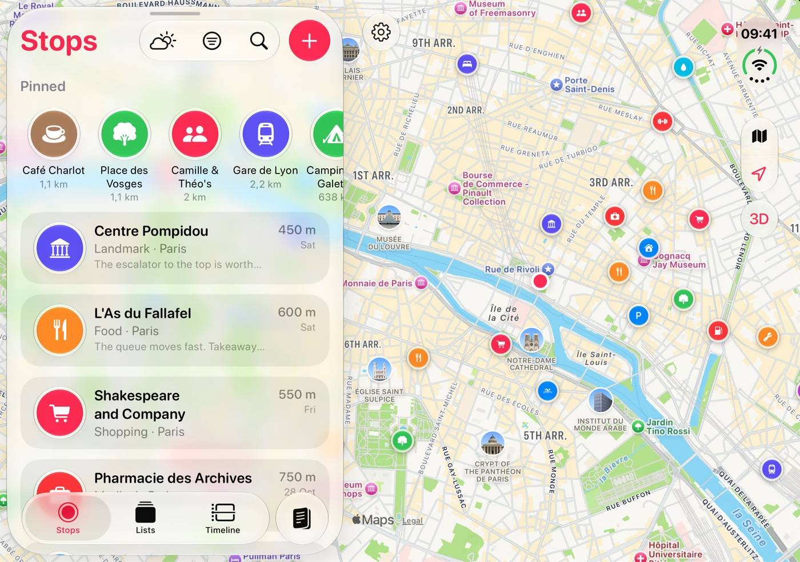
Inteligente, y siempre privada.
En los dispositivos compatibles con Apple Intelligence, Stops escribe tus viajes, entiende lo que buscas y ordena lo que traes. Todo funciona en tu dispositivo, nunca en un servidor, y sin Apple Intelligence todo lo demás funciona igual.
Viajes que cuentan su propia historia
Cuando vuelves a casa, cada viaje recibe un título y un par de líneas, escritas a partir de tus propias visitas, pueblos, ciudades y clima. Nada es inventado.
Pregunta con tus propias palabras
Busca “playas a las que fui en Italia” o “ese lugar de ramen en Tokio” y encuentra las paradas y visitas que buscas.
Guarda un artículo completo
Comparte desde Safari un artículo de “los mejores lugares para nadar en la Provenza” y los lugares que menciona llegan juntos como una nueva lista.
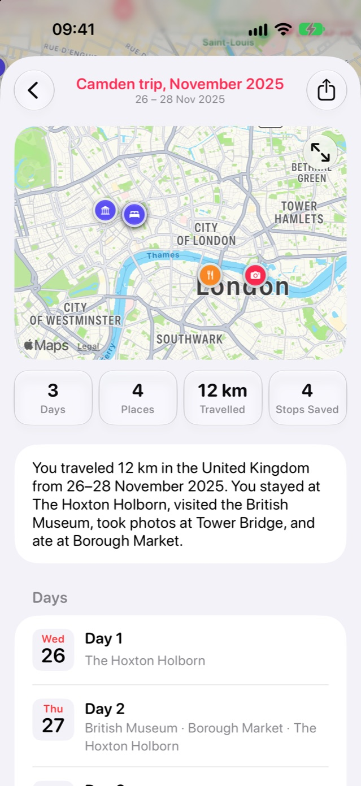
Importaciones más ordenadas
Los lugares que traes de Google Takeout o de un archivo GPX reciben una categoría según su nombre, y las listas nuevas, un ícono y un color que les quedan.
Planea por día
Divide un itinerario en días de paradas cercanas, cada uno en el orden que mejor le va: la caminata en la mañana y el mirador del atardecer al final.
Siri conoce tus viajes
“Abre el viaje Lisboa en Stops”, “¿Cuándo estuve por última vez en Roma en Stops?” o “¿En cuántos países estuve en Stops?”
Gratis para guardar tus lugares. Pro para los extras.
Guardar, las listas, tu mapa y toda tu Cronología son gratis, para siempre. Stops Pro agrega lo que mira más atrás y planea hacia adelante.
Gratis
- Guarda paradas, listas, pines y categorías
- La Cronología y todo tu historial
- Comparte listas con otras personas
- Paradas en el camino a donde vayas
- Importa lugares de guías de Mapas de Apple, Google Takeout y GPX
- Exporta todo, cuando quieras
- Widgets, Apple Watch, Siri y la hoja para compartir
Stops Pro
- Visitas de Fotos y de Google Timeline
- Páginas de viajes, historias y mapas para compartir
- Un diario y un parche por cada país
- El pronóstico en cada parada, y Adónde ir
- El clima en el momento de cada visita
- Itinerarios con rutas a pie y planes por día
Todos los planes funcionan con Compartir en familia, para hasta cinco integrantes de la familia.
Precios en dólares estadounidenses. Precios locales en el App Store.

A dónde vas no es asunto de nadie. Ni siquiera nuestro.
Una app que sabe dónde estuviste tiene que ganarse esa confianza. Por eso Stops no tiene servidores ni cuentas. Tus paradas y visitas viven en tus dispositivos y se sincronizan con tu propio iCloud, igual que Notas y Fotos. Nada nos llega: sin analíticas, sin anuncios, sin rastreo. No podríamos ver tu mapa aunque quisiéramos.
El desarrollador no recopila ningún dato de esta app.
Sin cuenta
Ábrela y listo. Sin registro, sin correo, sin contraseña.
Sin servidores nuestros
Tus paradas y visitas nunca pasan por nosotros.
Sin analíticas ni anuncios
Nada de cómo usas Stops nos llega.
Tu propio iCloud
Todo se sincroniza entre tus dispositivos a través de iCloud, como Notas y Fotos.
Las fotos se quedan donde están
Se leen en tu dispositivo, nunca se copian ni se suben.
La Cronología la decides tú
Desactivada hasta que la actives. Ponla en pausa cuando quieras o deja de registrar un lugar.
Tu próxima parada te está esperando.
Stops llega el 1 de diciembre al iPhone, iPad, Mac y Apple Watch. Resérvala ahora y se descargará automáticamente ese día.